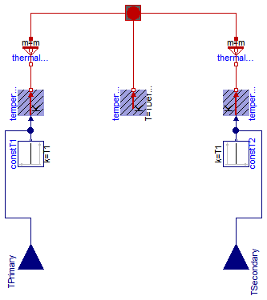

Each machine model is equipped with a machine-specific conditional thermalPort.
If useThermalPort == false, a machine-specific thermal ambient precribing constant temperatures is used inside the machine.
If useThermalPort == true, a thermal model or machine-specific thermal ambient prescribing the temperatures has to be connected from outside.
On the other hand, all losses are dissipated to this internal or external thermal ambient.
The machine specific thermal connector contains heatPorts
for all relevant loss sources of the machine type, although some of the loss sources are not yet implemented;
these heatPorts are left unconnceted inside the machine, i.e., the HeatFlowRate is zero,
but they have to be connected to a constant temperature source in the internal or external thermal ambient.
Simple machine-specific thermal ambients for constant temperatures (useTemperatureInputs == false)
or temperatures prescribed via signal inputs (useTemperatureInputs == true) are provided in this package.
Up to now, only Ohmic losses in stator and rotor windings are implemented. They are modeled as linearly temperature dependent rsistors:
ROperational = RRef * (1 + alphaRef * (TOperational - TRef))
RRef at reference temperatureTRefalpha20 at 20°CTOperational
(if useThermalPort == false; otherwise, the operational temperature is provided via the heatPort)TNominal
(required for DC machines to calculate the turns ratio)
The linear temperature coefficient alpha20 at 20°C = 293.15 K has to be converted to reference temperature TRef:
alpha20
alphaRef = -------------------------------
1 + alpha20 * (TRef - 293.15)
For this reason, the function convertAlpha is provided. In sub-package Constants linear temperature coefficients at 20°C for commonly used materials are defined.
heatPortStatorWinding[m]: m=3 heatPorts for the m=3 stator phasesheatPortRotorWinding: heatPort for the rotor cageheatPortStatorCore: stator core losses (not yet fully implemented)heatPortRotorCore: rotor core losses (not yet connected/implemented)heatPortStrayLoad: stray load lossesheatPortFriction: friction lossesheatPortStatorWinding[m]: m=3 heatPorts for the m=3 stator phasesheatPortRotorWinding[m]: m=3 heatPorts for the m=3 rotor phasesheatPortBrush: brush losses (not yet connected/implemented)heatPortStatorCore: stator core losses (not yet fully implemented)heatPortRotorCore: rotor core losses (not yet fully implemented)heatPortStrayLoad: stray load lossesheatPortFriction: friction lossesheatPortStatorWinding[m]: m=3 heatPorts for the m=3 stator phasesheatPortRotorWinding: conditional (useDamperCage=true/false) heatPort for the damper cageheatPortPermanentMagnet: permanet magnet losses (not yet connected/implemented)heatPortStatorCore: stator core losses (not yet fully implemented)heatPortRotorCore: rotor core losses (not yet connected/implemented)heatPortStrayLoad: stray load lossesheatPortFriction: friction lossesheatPortStatorWinding[m]: m=3 heatPorts for the m=3 stator phasesheatPortRotorWinding: conditional (useDamperCage=true/false) heatPort for the damper cageheatPortExcitation: electrical excitationheatPortBrush: brush lossesheatPortStatorCore: stator core losses (not yet fully implemented)heatPortRotorCore: rotor core losses (not yet connected/implemented)heatPortStrayLoad: stray load lossesheatPortFriction: friction lossesheatPortStatorWinding[m]: m=3 heatPorts for the m=3 stator phasesheatPortRotorWinding: conditional (useDamperCage=true/false) heatPort for the damper cageheatPortStatorCore: stator core losses (not yet fully implemented)heatPortRotorCore: rotor core losses (not yet connected/implemented)heatPortStrayLoad: stray load lossesheatPortFriction: friction lossesheatPortArmature: armature lossesheatPortPermanentMagnet: permanet magnet losses (not yet connected/implemented)heatPortBrush: brush lossesheatPortCore: armature core lossesheatPortStrayLoad: stray load lossesheatPortFriction: friction lossesheatPortArmature: armature lossesheatPortExcitation: electrical (shunt) excitationheatPortBrush: brush lossesheatPortCore: armature core lossesheatPortStrayLoad: stray load lossesheatPortFriction: friction lossesheatPortArmature: armature lossesheatPortSeriesExcitation: electrical series excitationheatPortBrush: brush lossesheatPortCore: armature core lossesheatPortStrayLoad: stray load lossesheatPortFriction: friction lossesheatPortArmature: armature lossesheatPortShuntExcitation: electrical (shunt) excitationheatPortSeriesExcitation: electrical series excitationheatPortBrush: brush lossesheatPortCore: armature core lossesheatPortStrayLoad: stray load lossesheatPortFriction: friction lossesheatPort1[m]: m=3 heatPorts for the m=3 primary phasesheatPort2[m]: m=3 heatPorts for the m=3 secondary phasesheatPortCore: iron core losses (not yet connected/implemented)Extends from Modelica.Icons.Package (Icon for standard packages).
| Name | Description |
|---|---|
| LinearTemperatureCoefficient20 | Linear temperature coefficient with choices |
| Material Constants | |
| Converts alpha from temperature 1 (default 20 degC) to temperature 2 | |
| Converts resistance from reference temperature to an actual temperature | |
| Thermal parts of asynchronous induction machines | |
| Thermal parts of synchronous induction machines | |
| Thermal parts of DC machines | |
| Thermal ambient for transformers |
type LinearTemperatureCoefficient20 =
Modelica.SIunits.LinearTemperatureCoefficient
"Linear temperature coefficient with choices";
 Modelica.Electrical.Machines.Thermal.convertAlpha
Modelica.Electrical.Machines.Thermal.convertAlpha
From the temperature coefficient alpha1 at temperature T1 (default 20 degC = 293.15 K)
the temperature coefficient alpha2 at temperature T2 is calculated:
alpha1
alpha2 = ------------------------
1 + alpha1 * (T2 - T1)
Extends from Modelica.Icons.Function (Icon for functions).
| Type | Name | Default | Description |
|---|---|---|---|
| LinearTemperatureCoefficient | alpha1 | Temperature coefficient at temperature 1 (default: 20 degC) [1/K] | |
| Temperature | T2 | Temperature 2 [K] | |
| Temperature | T1 | 293.15 | Temperature 1 (default: 20 degC) [K] |
| Type | Name | Description |
|---|---|---|
| LinearTemperatureCoefficient | alpha2 | Temperature coefficient at TRef [1/K] |
function convertAlpha
"Converts alpha from temperature 1 (default 20 degC) to temperature 2"
extends Modelica.Icons.Function;
input Modelica.SIunits.LinearTemperatureCoefficient alpha1
"Temperature coefficient at temperature 1 (default: 20 degC)";
input Modelica.SIunits.Temperature T2 "Temperature 2";
input Modelica.SIunits.Temperature T1=293.15
"Temperature 1 (default: 20 degC)";
output Modelica.SIunits.LinearTemperatureCoefficient alpha2
"Temperature coefficient at TRef";
algorithm
alpha2 := alpha1 / (1 + alpha1*(T2 - T1));
end convertAlpha;
Modelica.Electrical.Machines.Thermal.convertResistance
From the temperature coefficient alpha20 at 20 degC (equals to 293.15 K) the parameter alphaRef at TRef
alpha20
alphaRef = -------------------------------
1 + alpha20 * (TRef - 293.15)
is determined; using this value, actual resistance R with respect to the actual temperature T is calculated by
R ------ = 1 + alphaRef * (T - TRef) RRef
where RRef is the resistance at the reference temperature TRef.
Extends from Modelica.Icons.Function (Icon for functions).
| Type | Name | Default | Description |
|---|---|---|---|
| Resistance | RRef | Resistance at TRef [Ohm] | |
| Temperature | TRef | Reference temperature [K] | |
| LinearTemperatureCoefficient | alpha20 | Temperature coefficient at 20 degC [1/K] | |
| Temperature | T | Actual temperature [K] |
| Type | Name | Description |
|---|---|---|
| Resistance | R | Actual resistance at T [Ohm] |
function convertResistance
"Converts resistance from reference temperature to an actual temperature"
extends Modelica.Icons.Function;
input Modelica.SIunits.Resistance RRef "Resistance at TRef";
input Modelica.SIunits.Temperature TRef "Reference temperature";
input Modelica.SIunits.LinearTemperatureCoefficient alpha20
"Temperature coefficient at 20 degC";
input Modelica.SIunits.Temperature T "Actual temperature";
output Modelica.SIunits.Resistance R "Actual resistance at T";
algorithm
R := RRef * (1 + Machines.Thermal.convertAlpha(alpha20, TRef)*(T - TRef));
end convertResistance;

| Type | Name | Default | Description |
|---|---|---|---|
| Integer | m | 3 | Number of phases |
| Boolean | useTemperatureInputs | false | If true, temperature inputs are used; else, temperatures are constant |
| Temperature | T1 | Temperature of primary windings [K] | |
| Temperature | T2 | Temperature of secondary windings [K] |
| Type | Name | Description |
|---|---|---|
| ThermalPortTransformer | thermalPort | |
| input RealInput | TPrimary | Temperature of primary windings |
| input RealInput | TSecondary | Temperature of secondary windings |
model ThermalAmbientTransformer "Thermal ambient for transformers"
parameter Integer m(min=1) = 3 "Number of phases";
parameter Boolean useTemperatureInputs=false
"If true, temperature inputs are used; else, temperatures are constant";
constant Modelica.SIunits.Temperature TDefault=293.15 "Default temperature";
parameter Modelica.SIunits.Temperature T1(start=TDefault)
"Temperature of primary windings";
parameter Modelica.SIunits.Temperature T2(start=TDefault)
"Temperature of secondary windings";
output Modelica.SIunits.HeatFlowRate Q_flow1 = temperature1.port.Q_flow
"Heat flow rate of primary windings";
output Modelica.SIunits.HeatFlowRate Q_flow2 = temperature2.port.Q_flow
"Heat flow rate of secondary windings";
output Modelica.SIunits.HeatFlowRate Q_flowCore = temperatureCore.port.Q_flow
"Heat flow rate of core losses";
output Modelica.SIunits.HeatFlowRate Q_flowTotal=Q_flow1 + Q_flow2 + Q_flowCore;
Machines.Interfaces.ThermalPortTransformer thermalPort(final m=m);
Modelica.Thermal.HeatTransfer.Sources.PrescribedTemperature temperature1;
Modelica.Blocks.Sources.Constant constT1(final k=T1) if not useTemperatureInputs;
Modelica.Blocks.Interfaces.RealInput TPrimary if
useTemperatureInputs
"Temperature of primary windings";
Modelica.Thermal.HeatTransfer.Sources.PrescribedTemperature temperature2;
Modelica.Blocks.Sources.Constant constT2(final k=T1) if not useTemperatureInputs;
Modelica.Blocks.Interfaces.RealInput TSecondary if
useTemperatureInputs
"Temperature of secondary windings";
Modelica.Thermal.HeatTransfer.Sources.FixedTemperature temperatureCore(final T=
TDefault);
Modelica.Thermal.HeatTransfer.Components.ThermalCollector
thermalCollector1(final m=m);
Modelica.Thermal.HeatTransfer.Components.ThermalCollector
thermalCollector2(final m=m);
equation
connect(TPrimary, temperature1.T);
connect(constT1.y, temperature1.T);
connect(TSecondary, temperature2.T);
connect(constT2.y, temperature2.T);
connect(temperatureCore.port, thermalPort.heatPortCore);
connect(thermalCollector1.port_b, temperature1.port);
connect(thermalCollector2.port_b, temperature2.port);
connect(thermalCollector1.port_a, thermalPort.heatPort1);
connect(thermalCollector2.port_a, thermalPort.heatPort2);
end ThermalAmbientTransformer;